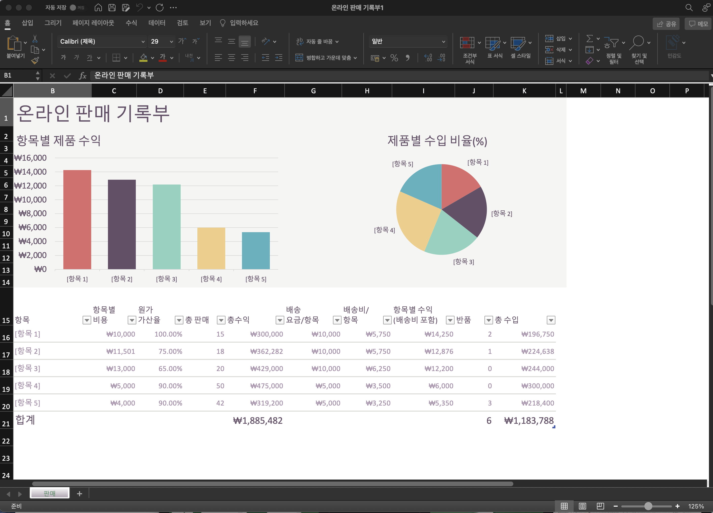
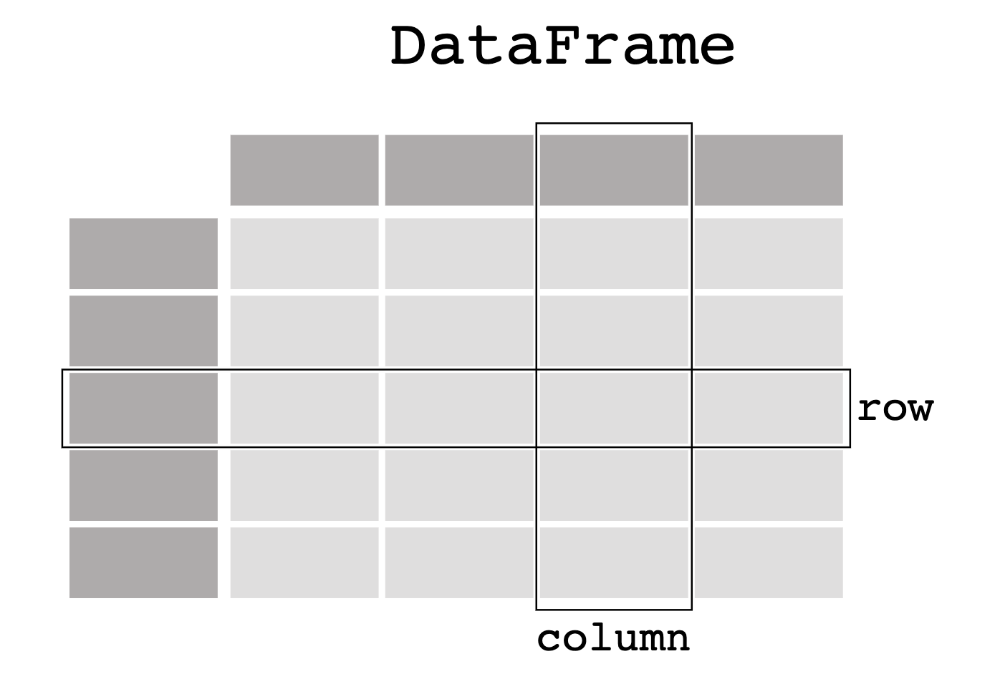

Chapter 2 R 기초
이 과목에서 다룰 R은 통계 분석과 데이터 처리에 특화된 프로그래밍 언어로서 다음과 같은 특징을 가지고 있습니다.
- R은 인터프리터 언어입니다.
’인터프리터’는 말 그대로 통역사 또는 연주자라는 뜻을 가집니다. 즉, 인간의 언어를 컴퓨터가 곧바로 이해하고 실행할 수 있도록 즉시 번역해 주는 역할을 합니다. 사용자가 한 문장을 입력하면, 인터프리터가 이를 번역하여 컴퓨터에 전달하고, 그 결과를 바로 돌려받을 수 있습니다. 따라서 R은 사용하기 편리한 언어라 할 수 있습니다.
반대로, 인터프리터가 아닌 언어(예: FORTRAN, C)는 결과를 얻기 위해 반드시 컴파일과 링크 같은 과정을 거쳐야 하기 때문에 초보자가 사용하기에는 다소 어렵습니다.
- R은 대화형(interactive) 언어입니다.
R은 대화형 방식으로 사용할 수 있습니다. 즉, 명령어를 한 줄 입력하면 바로 결과를 얻는 방식을 반복할 수 있습니다. 이는 마치 휴대용 계산기를 사용하는 것과 비슷합니다.
다른 범용 언어 중에는 반드시 여러 명령어를 묶어서 한꺼번에 실행해야만 결과를 얻을 수 있는 경우가 많습니다. 반면 R은 대화형 사용이 가능하기 때문에, 배우고 실습하기에 매우 유리합니다.
- R을 가장 쉽게 사용하는 방법은 RStudio 입니다.
R은 기본적으로 콘솔(터미널) 환경에서 실행됩니다. 하지만 콘솔에서 직접 R을 실행하는 것보다 훨씬 더 쉽고 편리하게 사용할 수 있는 통합개발환경(IDE)이 바로 RStudio (Posit RStudio) 입니다. RStudio에서는 코드 편집기, 콘솔, 그래픽 창, 패키지 관리, 그리고 본 강의자료와 같은 R Markdown 문서 작성 기능을 한 화면에서 모두 다룰 수 있습니다.
이 과목에서는 다음 두 가지 방식을 권장합니다.
- 본인 컴퓨터에 R + RStudio Desktop 을 설치
- 설치 없이 클라우드에서 사용 가능한 Posit Cloud (구 RStudio Cloud)
※ 참고 링크
- R 다운로드: https://cran.r-project.org/
- RStudio Desktop: https://posit.co/download/rstudio-desktop/
- Posit Cloud: https://posit.cloud/
2.1 표현식과 변수
2.1.1 표현식
R 환경에서 표현식을 사용하는 것은 여러분이 휴대용 계산기를 사용하는 것과 매우 유사합니다. R 언어를 포함하는 프로그래밍 언어는 인간의 언어보다 훨씬 단순합니다.
R 언어도 인간의 언어와 같이 정해진 문법이 있는데, 표현식은 주어진 자료를 어떻게 처리할 것인지 컴퓨터에게 전달하는 문장입니다. 프로그래밍 언어의 문장도 인간의 언어와 마찬가지로 정해진 규칙, 즉 문법에 맞추어 작성해야 합니다.
예를 들어, 1 + 2 라는 표현식은 수학적인 연산을 나타내며, 1에 2를 더해서 결과를 계산해 달라는 뜻입니다. 반면, 1 + * 2 와 같은 잘못된 표현식을 사용하면 오류가 발생합니다. 프로그래밍 언어의 표현식은 인간이 사용하는 언어와 유사한 문법을 따르도록 설계되어 있기 때문에, 사람이 이해하지 못하는 표현식은 컴퓨터도 이해할 수 없습니다.
2.1.2 수학 연산
숫자 1을 입력하면 결과로 1이 출력됩니다.
## [1] 1사칙 연산 역시 표현식을 입력하면 즉시 결과를 보여 줍니다.
## [1] 4## [1] -3## [1] 6## [1] 2.5R은 사칙연산뿐 아니라 제곱, 몫, 나머지를 구하는 다양한 연산도 지원합니다.
| 연산자 | 의미 | 예시 | 결과 |
|---|---|---|---|
+ |
덧셈 | 2 + 3 |
5 |
- |
뺄셈 | 2 - 1 |
1 |
* |
곱셈 | 2 * 3 |
6 |
/ |
나눗셈 | 7 / 3 |
2.333… |
%% |
나머지 | 7 %% 3 |
1 |
%/% |
몫 | 10 %/% 3 |
3 |
^ |
제곱 | 3 ^ 4 |
81 |
## [1] 3## [1] 8여러 연산자가 함께 사용될 경우, 일반 수학의 연산 순서와 동일한 규칙이 적용됩니다.
## [1] 7괄호로 우선순위를 지정할 수도 있습니다.
## [1] 10만약 문법에 어긋난 표현식을 입력하면, R은 실행을 멈추고 오류 메시지(error message)를 보여 줍니다.
## Error in parse(text = input): <text>:1:4: 예기치 않은 '*'입니다
## 1: 1 +*
## ^2.1.3 비교연산자와 논리연산자
숫자의 크기를 비교하는 표현식을 실행하면 결과로 참(TRUE) 또는 거짓(FALSE)이 반환됩니다. 여기서 유의할 점은 TRUE와 FALSE는 참과 거짓을 나타내는 예약어이므로 변수 이름으로 사용할 수 없습니다. R에서는 이를 짧게 T, F로도 쓸 수 있지만, T/F는 예약어가 아니라 단순히 미리 정의된 변수이므로 덮어쓰기 사고를 막기 위해 TRUE/FALSE를 쓰는 것이 안전합니다.
R의 비교 연산자는 <, <=, >, >=, !=, == 입니다.
## [1] TRUE## [1] TRUE## [1] FALSE## [1] FALSE## Error in `TRUE <- 123`:
## ! 대입에 유효하지 않은 (do_set) 좌변입니다논리 연산자는 &(and), |(or), !(not) 으로 구성되며, 이를 이용해 논리식을 표현할 수 있습니다.
- 벡터 단위로 원소별 연산:
&,| - 길이가 1인 단일 조건에만 사용(흐름 제어용):
&&,||
## [1] TRUE## [1] TRUE## [1] FALSE2.1.4 변수
여러분이 요리를 할 때 그릇을 준비하고 음식을 담듯이, 프로그래밍 언어에서 변수(variable) 는 자료를 담는 그릇의 역할을 합니다. 그릇에 담는 음식이 상황에 따라 달라지듯, 변수에 저장되는 값도 바뀔 수 있습니다.
프로그램을 작성할 때 변수는 표현식의 결과를 저장하는 그릇으로 생각할 수 있습니다. R에서는 변수를 정의할 때 <- 또는 = 연산자를 사용하지만, 관례적으로 <- 를 더 권장합니다. 연산자의 오른쪽에는 변수에 저장할 값을 계산하는 표현식이 위치합니다. 이때 표현식에는 앞에서 정의된 변수를 포함할 수도 있습니다.
## [1] 100## [1] 600마치 요리에 따라 그릇에 담는 음식이 달라지듯이, 변수에 저장된 데이터도 상황에 맞게 새 값으로 바꿀 수 있습니다.
## [1] -200변수를 사용하는 이유는, 반복적으로 수행되는 일반적인 작업에서 특정 자료를 보다 편리하고 직관적으로 처리하기 위함입니다. 변수를 사용하면 계산 과정을 이해하기 쉽고, 프로그램을 재활용하기도 용이합니다.
예를 들어, 아르바이트 직원의 월급을 계산하는 작업을 생각해 봅시다. 먼저 시간당 임금(hour_rate)이 정해지고, 이어서 근로 일수(month_working_days)와 하루 근로 시간(day_working_hours)이 주어지면, 이 세 값을 곱하여 한 달의 월급이 계산됩니다.
아래는 1월에 일한 철수의 월급을 계산하는 프로그램 예시입니다.
hour_rate <- 10000
month_working_days <- 20
day_working_hours <- 4
month_pay <- hour_rate * month_working_days * day_working_hours
month_pay## [1] 8e+05아르바이트 직원마다 시간당 임금, 월간 근로 일수, 일일 근로 시간이 달라지므로 월급은 그에 따라 달라집니다. 그러나 월급을 계산하는 절차 자체는 항상 동일합니다. 변수를 활용하면 이러한 일반적인 절차를 프로그램으로 쉽게 표현할 수 있으며, 이를 반복적으로 사용할 수 있습니다.
아래는 2월에 일한 영이의 월급을 계산하는 프로그램 예시입니다.
hour_rate <- 11000
month_working_days <- 15
day_working_hours <- 5
month_pay <- hour_rate * month_working_days * day_working_hours
month_pay## [1] 825000변수 이름을 정할 때는 다음과 같은 규칙을 따라야 합니다.
- 대소문자를 구분합니다. (예:
myvar와myVar는 서로 다른 변수) - 문자, 숫자, 마침표(
.), 언더바(_)를 포함할 수 있습니다. 단, 숫자나 언더바로 시작할 수는 없습니다. - 마침표(
.)는 R에서 변수명에 자유롭게 쓸 수 있습니다(예:my.var). 다른 언어에서는 객체 멤버 접근으로 쓰이기 때문에 R 고유의 특징입니다.
또한 R의 변수에는 숫자뿐만 아니라 문자열(character) 도 저장할 수 있습니다. 문자열은 문자(character)의 조합이며, 아래와 같이 작은따옴표(' ') 또는 큰따옴표(" ")로 정의할 수 있습니다.
## [1] "John Doe"## [1] "이철수"## [1] "I can't go"2.1.5 라이브러리(패키지)와 함수
앞에서 사용한 print()와 cat()은 함수(function)라고 부르며, 괄호 안에 주어진 문자열이나 변수의 내용을 출력하는 역할을 합니다.
또한, 여러분이 수학 시간에 배운 기본적인 수학 함수들은 R에서 별도의 라이브러리를 불러오지 않고도 즉시 사용할 수 있습니다. 이는 R이 처음부터 통계·수치 계산을 목적으로 설계되었기 때문입니다.
## [1] 0.9092974## [1] 3.091042## [1] 1.342423## [1] 4## [1] 2.718282R에서 추가 기능이 필요할 때는 패키지(package) 를 불러옵니다. R의 패키지는 다른 언어의 라이브러리·모듈에 해당하는 개념이며, 특정 주제와 관련된 함수와 데이터의 묶음입니다. 패키지를 불러오는 명령어는 library() 입니다.
설치된 패키지의 함수를 라이브러리를 불러오지 않고 단발성으로 쓰고 싶다면 패키지명::함수명 형태로 호출할 수 있습니다.
R의 표준 함수 매뉴얼은 콘솔에서 ?함수명 또는 help(함수명) 으로 즉시 확인할 수 있습니다.
2.1.6 벡터와 리스트
R에서는 여러 데이터를 하나로 모아 관리하는 가장 기본적인 자료구조가 벡터(vector) 입니다. 벡터를 정의할 때는 c()(combine) 함수에 데이터나 변수를 쉼표(,)로 구분하여 나열합니다.
## [1] 1.0 2.0 0.5 100.0벡터의 모든 원소는 동일한 자료형을 가져야 합니다. 자료형이 섞여 있으면 자동으로 더 일반적인 자료형으로 변환(coercion)됩니다. 예를 들어 숫자와 문자열이 섞이면 모두 문자열로 변환됩니다.
## [1] "1" "2" "0.5" "chair"## [1] "character"서로 다른 자료형을 그대로 보존하려면 리스트(list) 를 사용합니다.
## [[1]]
## [1] 1
##
## [[2]]
## [1] 2
##
## [[3]]
## [1] 0.5
##
## [[4]]
## [1] "chair"리스트는 다른 리스트를 원소로 포함할 수도 있습니다.
## [[1]]
## [[1]][[1]]
## [1] 1
##
## [[1]][[2]]
## [1] 2
##
## [[1]][[3]]
## [1] 0.5
##
## [[1]][[4]]
## [1] "chair"
##
##
## [[2]]
## [1] "A"
##
## [[3]]
## [1] 1 2 3벡터·리스트의 각 원소는 순서(index)가 매겨져 있으며, 이 인덱스를 통해 원하는 원소에 접근할 수 있습니다. 변수 이름 뒤에 대괄호 [ ] 안에 인덱스를 넣으면 해당 원소를 꺼낼 수 있습니다. 이를 인덱싱(indexing), 여러 개의 원소를 한꺼번에 선택하는 경우를 슬라이싱(slicing) 이라고 합니다.
매우 중요한 차이점: R에서 인덱스는 1부터 시작합니다. 즉, 첫 번째 원소의 인덱스는 0이 아니라 1 입니다. (Python·C·Java 등 대부분의 언어가 0부터 시작하는 것과 다릅니다.)
## [1] 1## [1] 4## [1] 9## [1] 25R에서는 존재하지 않는 인덱스를 호출해도 오류가 발생하지 않고 NA(결측값) 를 반환합니다.
## [1] NA음수 인덱스를 사용하면 해당 위치의 원소를 제외한 나머지를 반환합니다. 이 역시 R의 고유한 기능입니다.
## [1] 4 9 16 25## [1] 9 16 25연속된 범위는 : 연산자로 만들 수 있으며, 이는 슬라이싱에 자주 사용됩니다.
## [1] 1 2 3 4 5## [1] 4 9 16마지막으로, 특정 변수나 숫자가 벡터에 포함되어 있는지 여부를 확인할 때는 포함 연산자 %in% 가 매우 유용합니다.
## [1] TRUE## [1] FALSE2.2 데이터 처리
R 프로그래밍 언어에 대해 본격적으로 알아보기 전에, 두 가지 간단한 예제를 통해 R 프로그램으로 데이터를 처리하는 연습을 먼저 해보겠습니다.
우리가 데이터를 다루고 정리하여 요약할 때 가장 쉽게 접할 수 있는 컴퓨터 응용 프로그램 중 하나는 바로 마이크로소프트 엑셀 입니다.

Figure 2.1: 엑셀 화면 예시
많은 일상적인 작업이나 업무에서 우리는 엑셀에 데이터를 입력하고, 제공되는 다양한 기능을 이용하여 원하는 결과를 얻습니다. 이러한 엑셀 기반의 작업은 기본적으로 사용자가 메뉴를 클릭하거나, 데이터를 직접 복사하고 붙여 넣는 방식으로 이루어집니다. 물론 엑셀에도 자체 프로그래밍 언어(VBA)가 있지만, 대부분의 일상적 작업은 수작업으로 처리되며, 이는 다른 사람이 동일한 작업을 반복해서 재현하기 어렵게 만듭니다.
반면, R과 같은 컴퓨터 언어를 이용해 데이터를 처리하면 동일한 작업을 반복하기 쉬울 뿐 아니라, 작업 내용이 바뀌더라도 신속하게 수정·적용할 수 있어 효율적입니다. 즉, 자동화 가 가능해지는 것입니다. 기본적으로 컴퓨터 프로그램은 복잡한 작업을 자동화하는 기능을 수행하며, 최근에는 기계학습과 인공지능 기술의 발전으로 이러한 자동화가 모든 분야에서 더욱 가속화되고 있습니다.
이 장에서는 데이터프레임 다루는 방법을 간단히 살펴보겠습니다.
2.2.1 데이터프레임
2.2.1.1 데이터프레임의 정의
R의 데이터프레임(data.frame) 은 표와 유사한 스프레드시트 형식의 자료 구조를 제공합니다. 즉, 데이터프레임은 2차원 행렬 구조로 이루어져 있으며, 행(row) 은 보통 하나의 관측값(또는 레코드)을 나타내고, 열(column) 은 각각의 변수를 나타냅니다.

Figure 2.2: 데이터프레임 구조
이제 4명의 학생의 이름(name), 성별(gender), 나이(age)로 구성된 4개의 행과 3개의 열을 가진 데이터프레임 df 를 만들어 보겠습니다.
data.frame() 함수의 괄호 안에는 각 열의 이름과 값을 이름 = 값 형태로 나열합니다. 각 값은 앞서 배운 벡터 형태로 주어집니다.
- 첫 번째 인자
name은 학생 이름을 나타내는 열을 정의하며, 그 원소들은 성명으로 이루어진 문자열 벡터입니다. - 두 번째 인자
gedner는 학생 성별을 나타내는 열을 정의하며, 그 원소들은 문자열"M"과"F"로 구성된 벡터입니다. - 세 번째 인자
age는 학생 나이를 나타내는 열을 정의하며, 그 원소들은 정수로 구성된 벡터입니다.
df <- data.frame(
name = c("이철수", "김영희", "홍길동", "John Smith"),
gender = c("M", "F", "M", "M"),
age = c(23, 25, 21, 33)
)
df## name gender age
## 1 이철수 M 23
## 2 김영희 F 25
## 3 홍길동 M 21
## 4 John Smith M 332.2.1.2 데이터프레임 인덱싱
이제 데이터프레임이 정의되었습니다. 데이터프레임을 출력하면 가장 왼쪽에 나타나는 숫자 1, 2, 3, 4는 각 행(row)의 인덱스 를 의미합니다.
다음으로, 데이터프레임의 특정 열을 따로 지정하여 열 선택 해보겠습니다. R에서는 열을 선택하는 방법이 여러 가지 있습니다.
방법 1: $ 표기법 (가장 널리 쓰임)
## [1] "이철수" "김영희" "홍길동" "John Smith"## [1] 23 25 21 33방법 2: 대괄호 + 따옴표
## name
## 1 이철수
## 2 김영희
## 3 홍길동
## 4 John Smith## [1] "이철수" "김영희" "홍길동" "John Smith"df["col"]은 결과가 여전히 데이터프레임이고, df[["col"]]이나 df$col은 벡터를 반환합니다.
여러 개의 열을 선택할 때는 열 이름을 벡터로 묶어서 지정합니다.
## age name
## 1 23 이철수
## 2 25 김영희
## 3 21 홍길동
## 4 33 John SmithR 데이터프레임에서 행과 열을 동시에 다루는 일반 형식은 다음과 같습니다.
df[행 인덱스, 열 인덱스]행 인덱스나 열 인덱스를 비워두면 해당 차원 전체를 선택한다는 의미입니다.
데이터프레임에서 하나의 열은 R에서 벡터(numeric, character 등)로 반환됩니다.
이제 데이터프레임 df에서 나이가 25세 이상인 행만 선택해 보겠습니다. 먼저, age 열(벡터)에 비교 연산자를 적용할 수 있습니다.
## [1] FALSE TRUE FALSE TRUE논리 표현식 df$age >= 25의 결과는 참과 거짓으로 구성된 논리 벡터 입니다. 이제 이 논리 벡터를 행 인덱스로 활용하여, 데이터프레임 df의 행을 조건에 맞게 선택할 수 있습니다.
## name gender age
## 2 김영희 F 25
## 4 John Smith M 33데이터프레임의 행을 슬라이싱 하려는 경우에는 df[start:end, ] 형식을 사용합니다. R은 1부터 시작하고, 끝 인덱스도 포함된다는 점에 주의하세요.
## name gender age
## 1 이철수 M 23
## 2 김영희 F 25
## 3 홍길동 M 212.2.1.3 데이터프레임에 적용하는 함수
데이터프레임에서 숫자로 구성된 열들의 기초 통계량 은 summary() 함수를 사용하여 구할 수 있습니다. R에서는 점(.) 표기법으로 메소드를 호출하지 않고, 함수에 데이터프레임을 인자로 전달하는 방식으로 작업합니다.
## name gender age
## Length : 4 Length :4 Min. :21.0
## N.unique : 4 N.unique :2 1st Qu.:22.5
## N.blank : 0 N.blank :0 Median :24.0
## Min.nchar: 3 Min.nchar:1 Mean :25.5
## Max.nchar:10 Max.nchar:1 3rd Qu.:27.0
## Max. :33.0R의 데이터프레임은 다음과 같은 함수들을 자주 함께 사용합니다.
summary(df)→ 각 열의 요약 통계
dim(df)→ 행과 열의 개수nrow(df),ncol(df)→ 행 수, 열 수names(df)또는colnames(df)→ 열 이름head(df),tail(df)→ 처음/마지막 몇 행str(df)→ 자료 구조 요약sapply(df, max)→ 각 열의 최댓값 등
## [1] 4 3## [1] "name" "gender" "age"## age
## 33## 'data.frame': 4 obs. of 3 variables:
## $ name : chr "이철수" "김영희" "홍길동" "John Smith"
## $ gender: chr "M" "F" "M" "M"
## $ age : num 23 25 21 33데이터프레임 df의 원소는 행과 열의 숫자 인덱스를 이용하여 선택할 수 있습니다. R에서는 기본 대괄호 안에 행과 열 인덱스를 쉼표(,)로 구분하여 지정합니다.
## [1] "김영희"## [1] 21